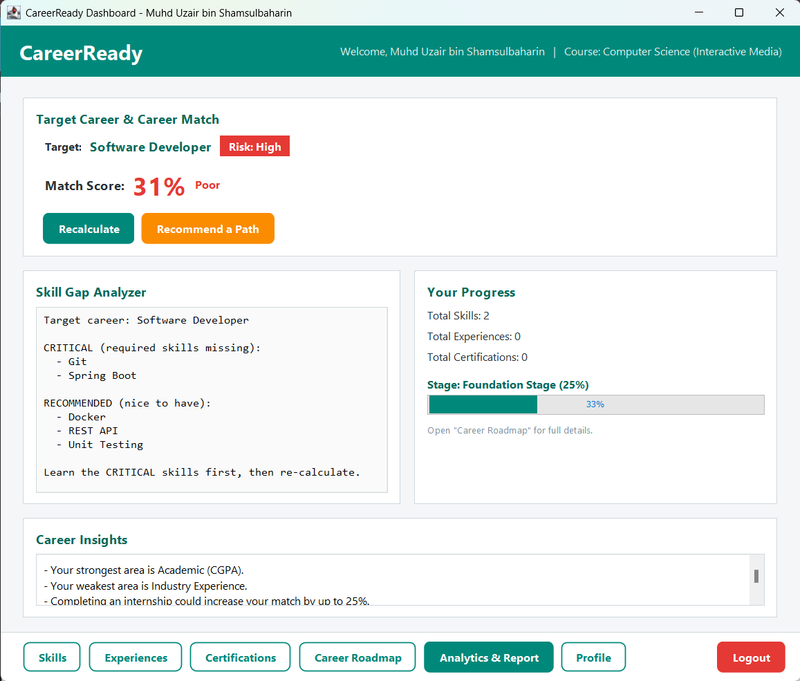
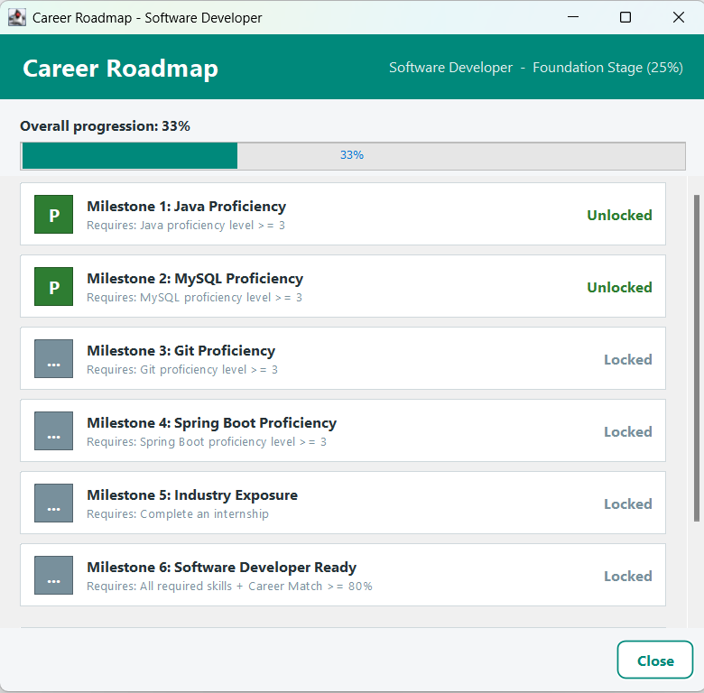
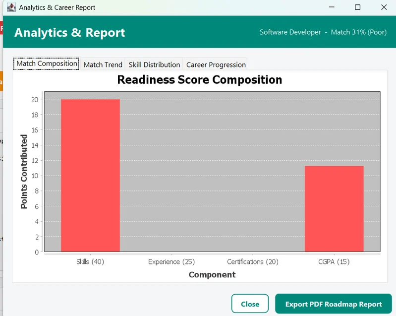

Java Swing Desktop Application
CareerReady: Student Career Roadmap Planner
A desktop career planning tool that calculates a personalised readiness score, identifies skill gaps, and generates a milestone roadmap to help university students track and improve their career readiness.



Project Overview
CareerReady addresses a real gap where most students do not know how job-ready they actually are until they are already applying. The system lets a student log their skills, work experience, and certifications, then select a target career track. A weighted formula across four components produces a readiness score out of 100, while a separate engine builds a step-by-step milestone roadmap. Built in Java Swing with a MySQL backend, it follows an MVC architecture across five packages and integrates JFreeChart for data visualisation and OpenPDF for report generation.